Getting Started with ATV dPAC in EcoStruxureTM Automation Expert
1. Download the following manuals
Use your tablet or your PC to access and download the required manual of our products on www.se.com.
|
Title of Documentation |
Reference Number |
|---|---|
|
Discover catalog for EcoStruxure Automation Expert |
DIA3ED2201101 (English), DIA3ED2201101 (French) |
|
Modicon M251/M580 Distributed PACs and Altivar Drives with EcoStruxureTM Automation Expert Hardware Reference Guide |
EIO0000004217 (English) |
|
EcoStruxure Automation Expert Applications Design Guidelines - Reference Manual |
EIO0000004686 (English) |
|
Altivar Lexium - Instruction Sheet - Option Modules |
S1A45591 (English) |
|
Altivar Option Modules - Instruction sheets |
VW3A3420 (digital encoder interface module) NHA80730.01 (digital encoder interface module - Instruction Sheet) , VW3A3422 (analog encoder interface module) — NVE19304.01 (analog encoder interface module - Instruction Sheet), VW3A3203 (extended I/O module - discrete 6I/2O - analog 2I) — EAV76404.01 (Extension module of Digital and Analog I/O - Instruction Sheet), VW3A3204 (extended relay module - 3 relays) — EAV76405.02 (Extension module of Output relays - Instruction Sheet), VW3A3424 (HTL encoder interface module) — QGH1764000 (HTL encoder interface module 12/15/24 Vdc - Instruction Sheet), VW3A3423 (resolver interface module) — NVE19307.01 (resolver interface module - Instruction Sheet) |
|
ATV dPAC user guide |
NNZ13577 (English), NNZ13578 (French), NNZ13579 (German), NNZ13580 (Spanish), NNZ13581 (Italian), NNZ13582 (Chinese), NNZ13583 (Portuguese) |
|
ATV dPAC VW3A3530D Product data sheet |
|
|
How to Configure ATV dPAC VW3A3530D in EcoStruxure Automation Expert - Video |
|
|
EcoStruxure Automation Expert - How to Videos |
Youtube Playlist: EcoStruxure Automation Expert How-to Videos |
|
Getting Started with ATV dPAC VW3A3530D |
JYT50503 (English), JYT50505 (French), JYT50511 (German), JYT50507 (Spanish), JYT50508 (Italian), JYT50513 (Chinese), JYT50517 (Portuguese) |
|
EcoStruxure Automation Device Maintenance Altivar User Manual |
JYT50472 (English) |
|
EcoStruxure Automation Device Maintenance - Software |
V3.1: EcoStruxure Automation Device Maintenance (Chinese, English, French, German, Italian, Portuguese, Spanish, Turkish). |
|
SoMove - FDT |
SoMove_FDT (Chinese, English, French, German, Italian, Portuguese, Spanish, Turkish) |
|
ATV340 Getting Started - Video |
FAQ FA367923 (English) |
|
ATV340 Getting Started |
NVE37643 (English), NVE37642 (French), NVE37644 (German), NVE37646 (Spanish), NVE37647 (Italian), NVE37648 (Chinese), NVE37643PT (Portuguese), NVE37643TR (Turkish) |
|
ATV340 Installation Manual |
NVE61069 (English), NVE61071 (French), NVE61074 (German), NVE61075 (Spanish), NVE61078 (Italian), NVE61079 (Chinese), NVE61069PT (Portuguese), NVE61069TR (Turkish) |
|
ATV340 Programming Manual |
NVE61643 (English), NVE61644 (French), NVE61645 (German), NVE61647 (Spanish), NVE61648 (Italian), NVE61649 (Chinese), NVE61643PT (Portuguese), NVE61643TR (Turkish) |
|
ATV340_DTM_Library_EN (English), ATV340_DTM_Lang_FR (French), ATV340_DTM_Lang_DE (German), ATV340_DTM_Lang_SP (Spanish), ATV340_DTM_Lang_IT (Italian), ATV340_DTM_Lang_CN (Chinese) |
|
|
ATV600 Getting Started |
EAV63253 (English), EAV63254 (French), EAV63255 (German), EAV63256 (Spanish), EAV63257 (Italian), EAV64298 (Chinese), EAV63253PT (Portuguese), EAV63253TR (Turkish) |
|
ATV630, ATV650 Installation Manual |
EAV64301 (English), EAV64302 (French), EAV64306 (German), EAV64307 (Spanish), EAV64310 (Italian), EAV64317 (Chinese), EAV64301PT (Portuguese), EAV64301TR (Turkish) |
|
ATV600 Programming Manual |
EAV64318 (English), EAV64320 (French), EAV64321 (German), EAV64322 (Spanish), EAV64323 (Italian), EAV64324 (Chinese), EAV64318PT (Portuguese), EAV64318TR (Turkish) |
|
ATV600 – DTM |
ATV6xx_DTM_Library_EN (English - to be installed first), ATV6xx_DTM_Lang_FR (French), ATV6xx_DTM_Lang_DE(German), ATV6xx_DTM_Lang_SP (Spanish), ATV6xx_DTM_Lang_IT (Italian), ATV6xx_DTM_Lang_CN (Chinese) |
|
ATV900 Getting Started |
NHA61578 (English), NHA61579 (French), NHA61580 (German), NHA61581 (Spanish), NHA61724 (Italian), NHA61582 (Chinese), NHA61578PT (Portuguese), NHA61578TR (Turkish) |
|
ATV930, ATV950 Installation manual |
NHA80932 (English), NHA80933 (French), NHA80934 (German), NHA80935 (Spanish), NHA80936 (Italian), NHA80937 (Chinese), NHA80932PT (Portuguese), NHA80932TR (Turkish) |
|
ATV900 Programming manual |
NHA80757 (English), NHA80758 (French), NHA80759 (German), NHA80760 (Spanish), NHA80761 (Italian), NHA80762 (Chinese), NHA80757PT (Portuguese), NHA80757TR (Turkish) |
|
ATV900 – DTM |
(English - to be installed first), ATV9xx_DTM_Lang_FR (French), ATV9xx_DTM_Lang_DE (German), ATV9xx_DTM_Lang_SP (Spanish), ATV9xx_DTM_Lang_IT (Italian), ATV9xx_DTM_Lang_CN (Chinese) |
|
Recommended Cybersecurity Best Practices |
CS-Best-Practices-2019-340 (English) |
You can download these technical publications and other technical information from our website at www.se.com/en/download.
Electrical equipment should be installed, operated, serviced, and maintained only by qualified personnel. No responsibility is assumed by Schneider Electric for any consequences arising of the use of this product.
2. Verify the Delivery of the ATV dPAC Module and Drive
Unpack the ATV drive, ATV dPAC module and verify that it has not been damaged.
Damaged products or accessories may cause electric shock or unanticipated equipment operation.
| DANGER | |
|---|---|
Contact your local Schneider Electric sales office if you detect any damage whatsoever.
Verify that the drive catalog number printed on the label is the same as that on the delivery note corresponding to the purchase order.
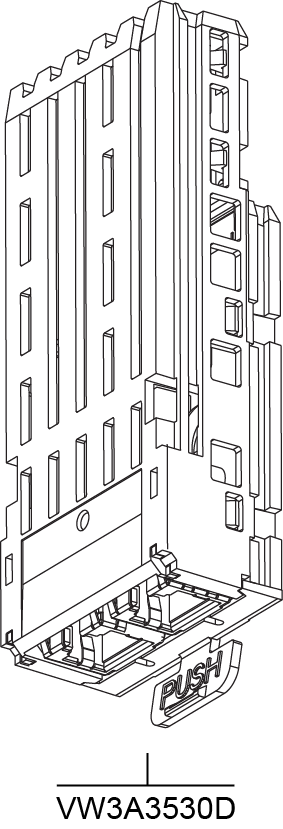
Write the ATV dPAC / ATV drive Model:
|
ATV dPAC |
ATV Drive |
|
|---|---|---|
|
Catalog number: |
||
|
Serial Number: |
||
|
Firmware version |
3. Verify the Supply mains Compatibility
(1) Verify that the supply mains are compatible with the drive.
(2) 3-phase supply mains _______ Volts
(3) Drive mains voltage _______ Volts
(4) Drive range:
4. Mount the Drive vertically
Refer to the Installation manual of the ATV6xx, ATV9xx or ATV340 drive. See #D-SE-0107535__TitleOfDocumentationReferenceNumber-7EED3FC5.
6. Connect the Drive: Power & Control
Refer to the above mentioned Installation manuals.
Refer to the ATV dPAC User Guide to connect the ATV dPAC.
7. Steps to update the Firmware with EcoStruxure Automation Device Maintenance
Refer to the ATV dPAC User Guide, chapter Firmware update with EcoStruxure Automation Device Maintenanceas well as the EcoStruxure Automation Device Maintenance User Manual, for more information about this step.
8. Steps to Program the ATV dPAC with EcoStruxure Automation Expert Build time
Before you begin:
-
Connect the Ethernet cable between the ATV dPAC port and the computer where EcoStruxure Automation Expert is running.
-
Put your computer IP address in the same range as the IP address of your ATV dPAC module.
-
Disable the firewall if it doesn’t allow the ATV dPAC to connect your computer.
Procedure:
-
Create a new solution and reference the libraries
-
Add and configure the ATV dPAC
-
Configure the security
-
Add the Modules to the Hardware Configuration
-
Create the canvases
Follow the instructions to program the ATV dPAC with EcoStruxure Automation Expert Buildtime.
Create a new solution and reference the libraries
-
Open the EcoStruxure Automation Expert Build time software.
-
Select , then Type the solution name.
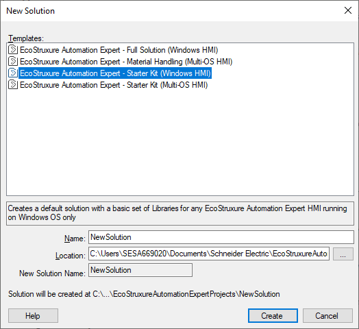
NOTICE -
Type the credentials of your ATV dPAC module
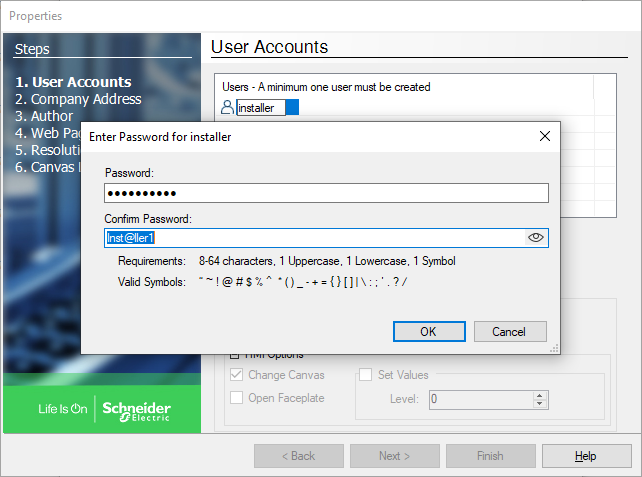
NOTE:-
Refer to the table below for more informations about the credentials of your ATV dPAC module:
Firmware Version EcoStruxure Automation Expert21.2 (ATV _VW3A3530D_A3.1IE06_B04-21.2.21342.00.fwp) and higher
Security not Configured — New user (out of the box ATV dPAC)
-
Login ID:
installer -
Password:
Inst@ller1
Security Enabled
-
EcoStruxure Automation Expert User Management credentials
Firmware version earlier to EcoStruxure Automation Expert21.2 (ATV _VW3A3530D_A3.1IE06_B04-21.2.21342.00.fwp)
Security Enabled (Default)
EcoStruxure Automation Device Maintenance Webserver credentials in the ATV Graphic Display Terminal (VW3A1111).
Security Disabled
Anonymous login
-
Login ID:
-
If the ATV dPAC credentials have been forgotten, you can reset its security , using the drive's Graphic Display Terminal (VW3A1111) (refer to the ATV dPAC user guide, local reset of the ATV dPAC security chapter for more information about this step).
-
Refer to the table below for more informations about the credentials of your ATV dPAC module:
-
In solution overview pad,
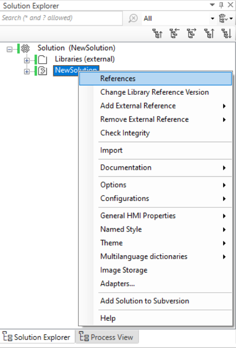
NOTE: The ATV device libraries are delivered with EcoStruxure Automation Expert.
Add and configure the ATV dPAC
-
Open the System tab
 → click on Physical devices .
→ click on Physical devices .
-
Drag and drop the Altivar Variable Speed drive of your device from Altivar Variable Speed Drives section.
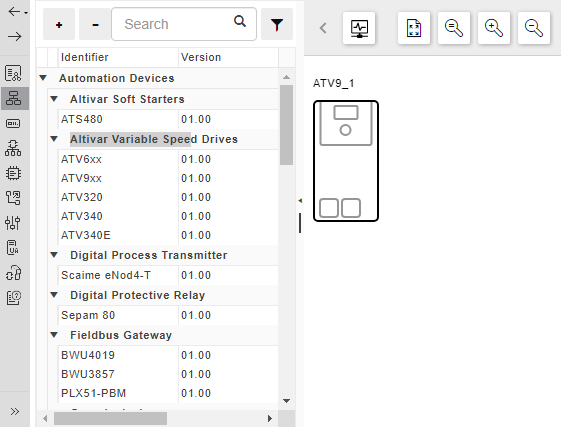
-
Click on the added device to display its properties → Select ATV dPAC for the reference of the communication card.
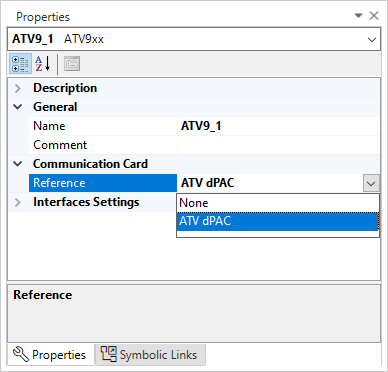
-
Type the IP address to match the IP address of your ATV dPAC Module.
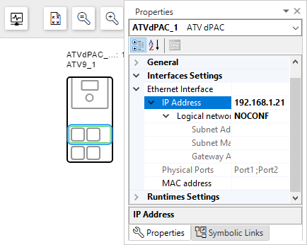
NOTE: You might need to set the IP address of ATV dPAC from the Graphic Display Terminal if it is not already done.Follow these steps to set the IP address of ATV dPAC:
-
From the Graphic Display Terminal select
-
Select the IP address using the arrow keys from the Graphic Display Terminal
-
Restart the drive
-
-
In the System tab
→ click on Logical devices → right click to add an ATV dPAC device type → link it with the Device Created in Physical Topology.
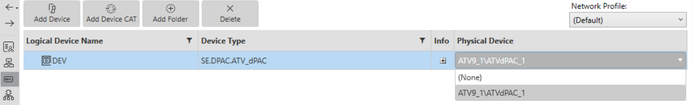
Configure the security
-
Click on the Start Monitoring icon to perform the system monitoring.
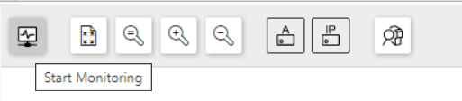
NOTE: The red shield symbol indicates that the security is not configured. -
Right click on the dPAC symbol → select configure security option → Click on Trust to accept the ATV dPAC module Digital Certificate.
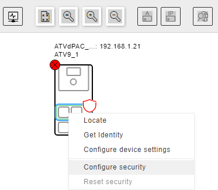
NOTE: Click on Trust to accept the ATV dPAC module Digital Certificate.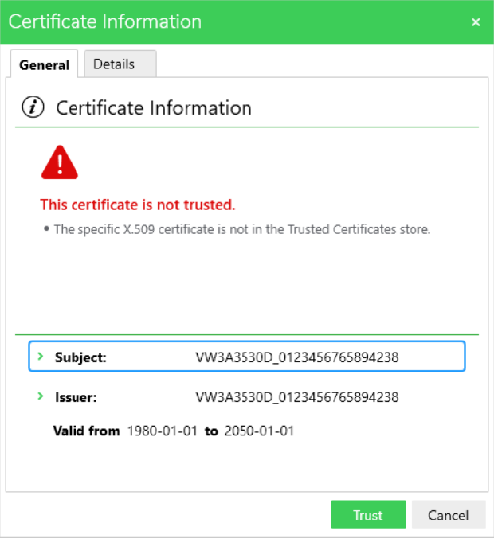
-
Enter login credentials, and click OK.
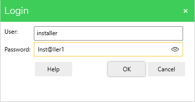
NOTE: The default credentials are: Login : installer ; Password : Inst@ller1.NOTE: The Cyber Security Shield will be green to signify a secured login.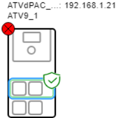
NOTE: After security configuration, EcoStruxure Automation Expert user management credentials are required to use other services like Modify IP, Reset security, Deploy solution of ATVdPAC.
Add the Modules to the Hardware Configuration
-
Right click on the added device in Logical devices → Open HW Configurator → Right click in the Hardware configuration to add an SE.IoATV.ATVdPACxVW3A3530D (Bus Master) → Right click on the added ATVdPACxVW3A3530D to add:
-
VSD_Control
-
IO_Embedded (Optional)
-
IO_Extended (Optional)
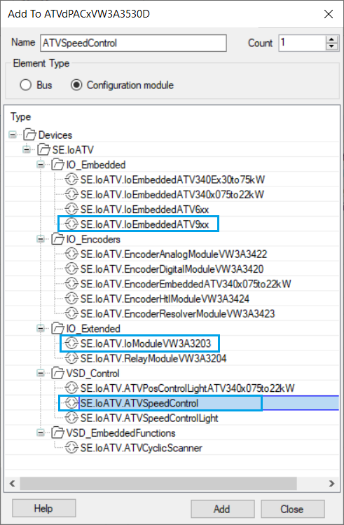
-
-
In the System tab
→ click on Function Blocks Network → Add a DPAC_FULLINIT function block → connect it as shown below.
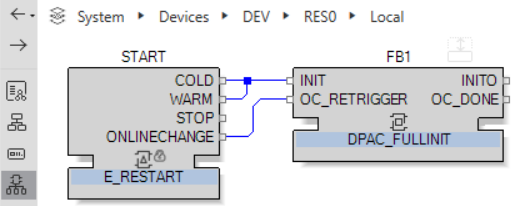
-
Build
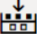
the Hardware I/O modules → Right click on the HW configuration Modules and select Properties Editor to setup the properties.NOTE: The permissible number of adding extra modules for ATV6xx is 1 and ATV9xx, and ATV340 is 2. Build will trigger an error when using more than permissible number of modules on the HW configuration.The following table displays the permissible number of adding extra modules for each device:Device
ATV9xx
ATV6xx
ATV340
Size: 1–2–3
Size: 4-5
Slot A
ATVdPACxVW3A3530D Slot B
- IO_Extended
- IO_Encoder
IO_Extended
- IO_Extended
- IO_Encoder
Slot C
Not Applicable
Not Applicable
IO_Extended
IO_Extended
NOTE: The ATV dPAC name must be changed in absence of IO embedded Hardware CAT toATV9xx, orATV6xx, orATV340E, so that the error can be generated for adding multiple extra modules. -
Set the VSD command parameters and connect all the required IO’s
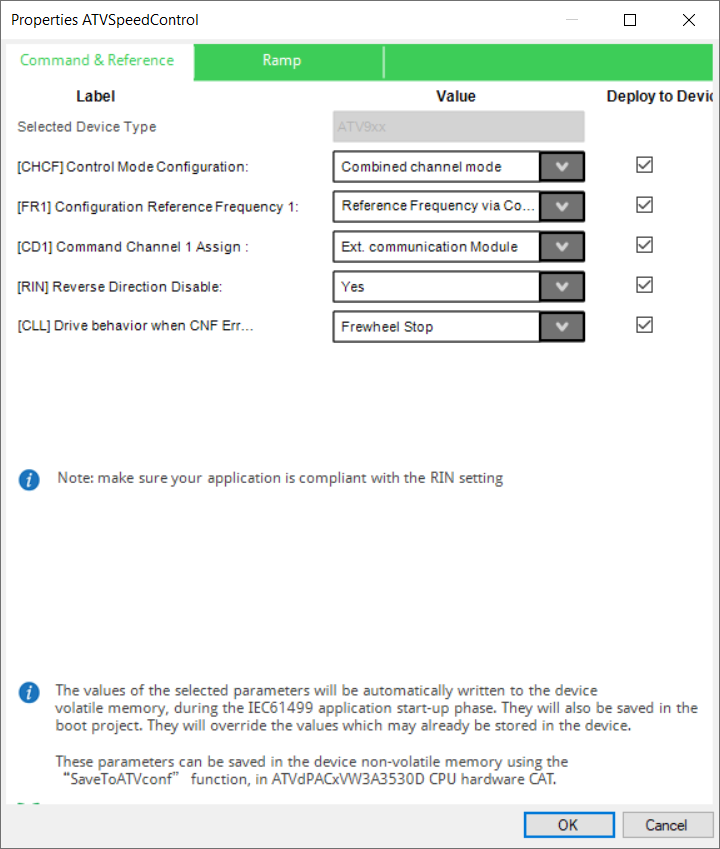
Create the canvases
-
Build the solution → create an application canvas in EcoStruxure Automation Expert HMI application, including ATV faceplates
-
In the CAT Instances > Hardware drag and drop the necessary instances to the Canvas. Use the sDrive for monitoring and control. sDrive Interface for monitoring.
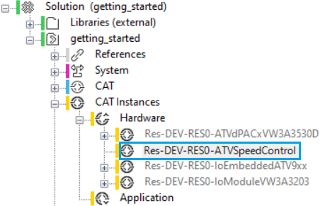
-
Compile, Login, Clean, Deploy and Run Device actions in Simulation mode or with an actual device, using Action option from Deploy and Diagnostic tab.
After finishing all these steps you can start your local HMI canvas.
ATV dPAC commissioning using DTM in SoMove
The following table displays the compatibility matrix between your device and ATV dPAC firmware versions:
| Hardware | Compatible Version |
|---|---|
| ATV dPAC Module VW3A3530D |
>= V3.1IE05 B09 |
|
Altivar Process ATV6xx |
>= V3.5IE94 B02 |
|
Altivar Process ATV6xx |
<= V3.4 |
|
Altivar Process ATV9xx |
>= V3.5IE94 B02 |
|
Altivar Process ATV9xx |
version <= V3.4 |
|
Altivar Machine ATV340 |
>= V3.4IE94 B02 |
|
Altivar Machine ATV340 |
<= V3.3 |
9. Steps to Program an ATV drive Mbtcp Server with EcoStruxure Automation Expert Build time
Setup the communication channel for drive control and scanner IO profile using SoMove. The ATV drive Modbus must be configured with EcoStruxure Automation Expert Build time for controlling the server drives. The configured server drives can be used for the end of the device control using ATV dPAC applications.
-
Create a solution as shown in the previous section.
-
Right click on the added device in Logical devices → Open HW Configurator → Right click in the HW configuration to add a Standard.IoModbus.MODBUS
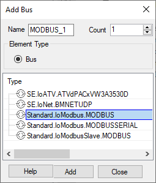
NOTE:-
With OPC UA server disabled: ATV dPAC can control up to 8 Mbtcp server drives using ATVSpeedControlMbtcp Hardware CATs
-
With OPC UA server enabled: ATV dPAC can control up to 8 Mbtcp server drives using ATVSpeedControlMbtcp Hardware CATs
NOTE: It is recommended to use ATVSpeedControlLightMbtcp Hardware CATs for high performance application.NOTE: ATV dPAC can control up to 15 Altivar Mbtcp server drives using generic Modbus Hardware CATs. -
-
Right click on the added Modbus client to add an ATVSpeedControlMbtcp.
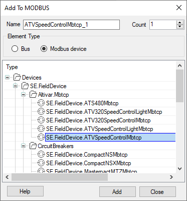
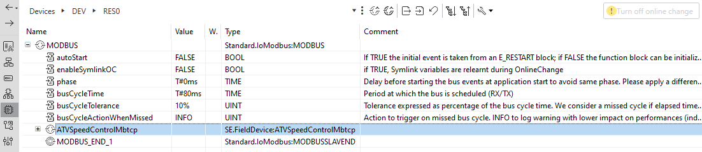
-
Configure the ATVSpeedControlMbtcp and ATV drive IP address
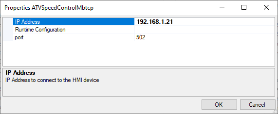
-
Build the solution → create an application canvas in EcoStruxure Automation Expert HMI application.
-
In the CAT Instances > Hardware drag and drop the necessary instances to the Canvas. Use the sDrive for monitoring and control. .
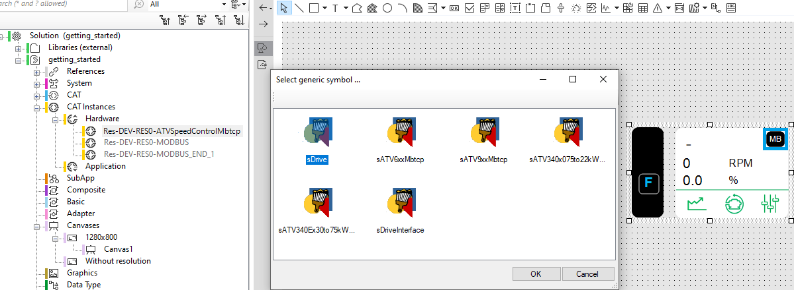
-
Compile, Login, Clean, Deploy and Run Device actions in Simulation mode or with an actual device, using Action option from Deploy and Diagnostic tab.
10. Procedure to test without device
The Test without device function enables the EcoStruxure Automation Expert to simulate a logic using dPAC module. Test without device allows you to check a logical operation without using the actual device.
Before you begin:
-
In the HW Configuration, add an ATVSpeedControl under an ATV dPAC Module.
-
In Function Blocks Network Add a DPAC_FULLINIT and do the necessary connection.
-
Build the solution, create a new Canvas and add the sDrive faceplate of the ATVSpeedControl CAT instance
-
Compile, Start runtime simulation, Login, Clean, Deploy and Run Device actions in Simulation mode or with an actual device, using Action option from Deploy and Diagnostic tab.
Procedure:
-
Start Local HMI
-
Click on the Command icon on the sDrive faceplate to open the Drive Control.
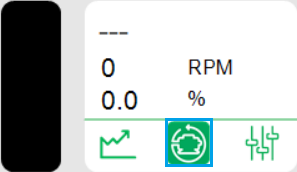
-
Set Test without Device to ON.
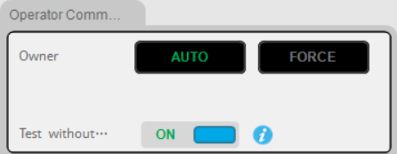
-
Enable FORCE mode → accept the warning message.
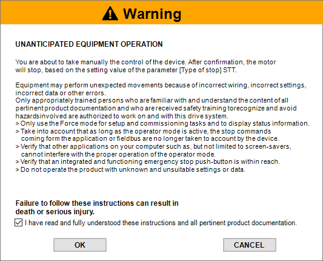
-
Set the Speed Reference value.
-
Give Run Command.
NOTE: The drive state will change from RDY to RUN.Actual Speed reaches the set speed during the acceleration time.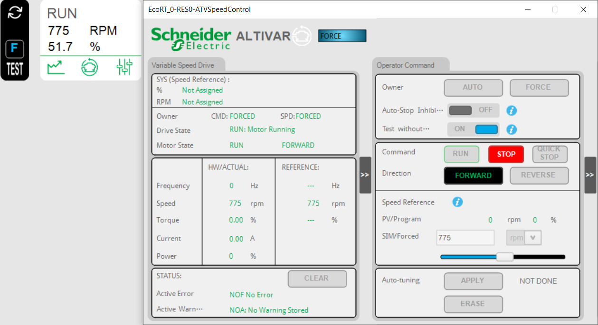
-
Click the STOP command to stop the Motor. The drive decelerates and reaches 0 rpm during the deceleration time.
11. Steps to Access the Motor and ATV Parameters
Use the VSD Advanced Settings to access the ATV parameters for motor control.
-
Connect the drive to your PC with an Ethernet cable
-
As shown in the eighth section.
-
Create a solution
-
Add an Hardware CAT to the Hardware Configuration
-
create a canvas, add the ATVSpeedControl CAT Instance to it
and choose sDrive.
-
-
Start Local HMI, click on the Configuration button
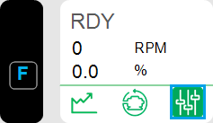
-
The ATVSpeedControl settings faceplate is opened. Click on the Login button to login to the Webserver.
A new window will pop out: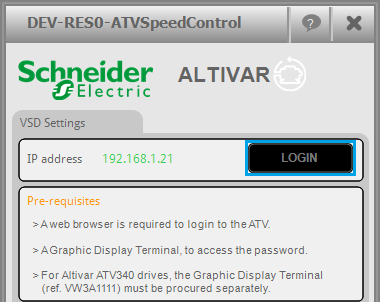
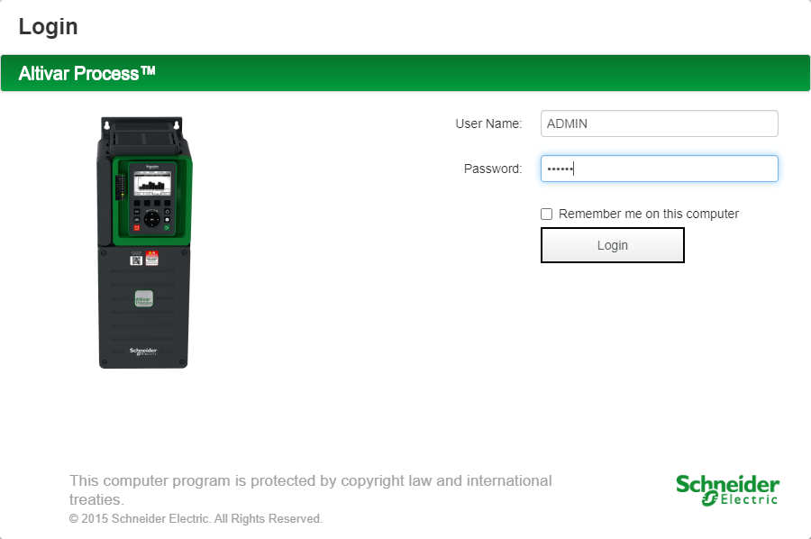
NOTE: On first connection, default connection IDs are:-
User Name: ADMIN
-
Password, available from the Graphic Display Terminal (VW3A1111):
-
For Mbtcp, add IP in Symbol to open the Webserver.
NOTE: You can reset the password if you forget it.. -
-
Change default connection ID (User Name and Password).
WARNING -
Access to tab.
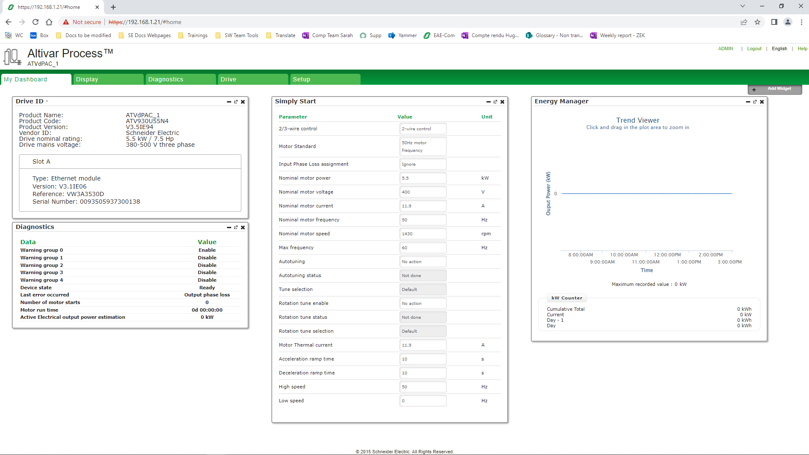
NOTE: SoMove can also be used to access the motor parameters.
12. Set the motor parameters for asynchronous motor
| Menu | Parameter |
|---|---|
|
[Simply start] |
[Motor Standard] (bFr): Standard motor frequency |
|
[Nominal Motor Power] (npr): Nominal motor power on motor nameplate |
|
|
[Nom Motor Voltage] (uns): Nominal motor voltage on motor nameplate |
|
|
[Nom Motor Current] (ncr): Nominal motor current on motor nameplate |
|
|
[Nominal Motor Freq] (frs): Nominal motor frequency on motor nameplate |
|
|
[Nominal Motor Speed] (nsp): Nominal motor speed on motor nameplate |
|
|
[2/3-Wire Control] (tcc): Command control by 2 wire or 3 wire control |
|
|
[Max Frequency] (tfr): Maximum motor frequency |
|
|
[Motor Th current] (ith): Motor thermal current on motor nameplate |
13. Perform a Motor [Autotuning]
Overview
The purpose of the Auto-tuning function is to command the drive to measure the motor characteristics. Auto-tuning allows the device to measure the motor characteristics and improve the motor control performance. Auto-tuning command is communicated to the connected device with EcoStruxure Automation Expert to measure and update the value of several parameters. The EcoStruxure Automation Expert indicates the status of auto-tuning during progress and also when it has finished.
Pre-condition
-
Drive is in ready (RDY) state
-
Motor is stopped
-
Auto-tuning is not in progress
-
Ensure that [Nom Motor Voltage] ((UnS)), [Nominal Motor Freq] ((FrS)), [Nom Motor Current] ((nCr)), [Nominal Motor Speed] ((nSP)), and [Nominal motor power] ((nPr)) or [Motor 1 Cousinus Phil] ((COS)) parameters are correctly defined.
| WARNING | |
|---|---|
Steps to follow
-
Connect the drive to your PC with an Ethernet cable
-
As shown in the 8th section.
-
Create a solution
-
Add the ATVSpeedControl Hardware CAT to the Hardware Configuration
-
create a canvas, add the ATVSpeedControl CAT Instance to it
and choose sDrive.
-
-
Start Local HMI, click on the Command icon on the sDrive faceplate to open the Drive Control faceplate.
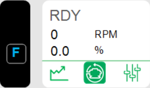
-
Enable the Force mode → accept the warning message.
-
APPLY the Auto-tuning.NOTE: During Auto-tuning, the motor makes a small movement. Noise development and oscillations of the system are normal.
Erase Auto-tuning
This function is used to reset the motor parameters values measured during Auto-tuning.
| WARNING | |
|---|---|
14. Set the Speed Ramp Parameters using EcoStruxure Automation Expert
Steps for setting the ramp characteristics for motor control using ramp properties editor.
-
Connect the drive to your PC with an Ethernet cable
-
As shown in the eighth section.
-
Create a solution
-
Add the ATVSpeedControl Hardware CAT to the Hardware Configuration
-
-
In the Hardware Configuration tab → right click on the added ATVSpeedControl → click on Properties Editor → Select the Device Type
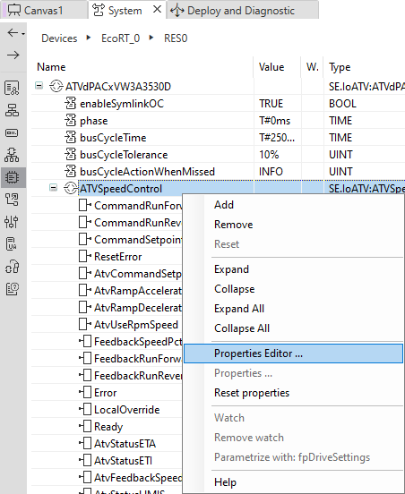
-
Open the Ramp tab.
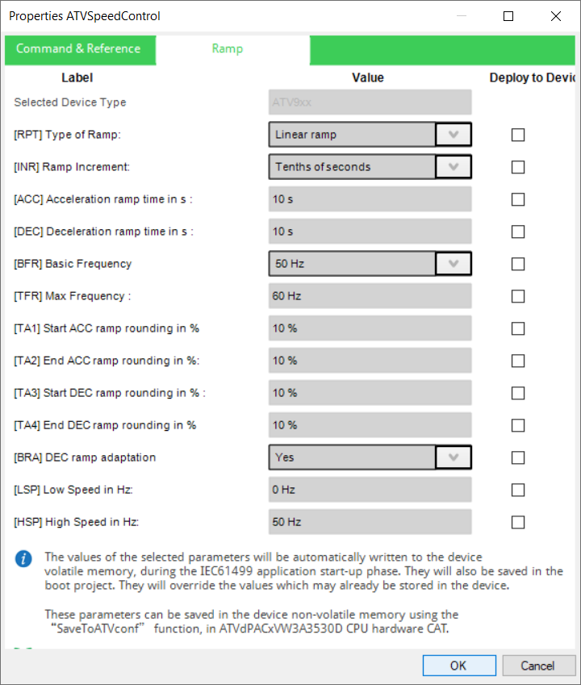
NOTE: To avoid overwriting all the parameters during the deployment. you are provided with a check box for each parameter to decide whether to overwrite a parameter or not. -
Change the following parameters values and click OK to apply the values
-
[ACC] Acceleration ramp
-
[DEC] Deceleration ramp
-
[LSP] Low Speed
-
[HSP] High Speed
-
-
Save the hardware configuration and deploy the application.
15. Steps to Start the Motor
The following steps provide instructions to start the motor with the EcoStruxure Automation Expert.
-
Connect the drive to your PC with an Ethernet cable
-
As shown in the eighth section.
-
Create a solution
-
Add the ATVSpeedControl Hardware CAT to the Hardware Configuration
-
create a canvas, add the ATVSpeedControl CAT Instance to it
and choose sDrive.
-
-
Start Local HMI, click on the Command icon on the sDrive faceplate to open the Drive Control faceplate.
-
Enable the Force mode → accept the warning message.
-
Set the speed reference
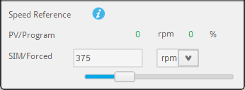
-
Use the RUN and the STOP commands from the Faceplate.
NOTE: Click FORWARD to run the motor in Forward direction or REVERSE to run the motor in Reverse direction. (Motor can run in REVERSE direction only if [RIN] = No)NOTE: You can RUN the Motor in auto mode through the application’s CAT .
The image below display the Drive status when the RUN Command is active:
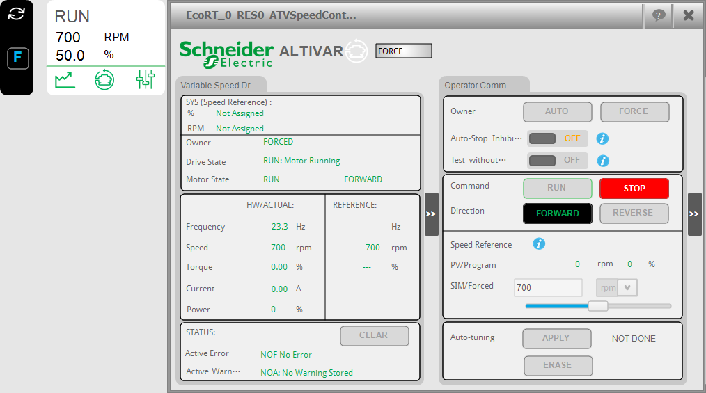
Errors and Warnings
The command faceplate will display an error message in case of anomalies, an error such as linking incorrect drive family, with the non-specific VSD faceplate is displayed in the command faceplate Status section.
Drive State field displays fault label, Active Error status displays the error specific message.
Refer to the Error and Warning section for the list of errors and warnings.
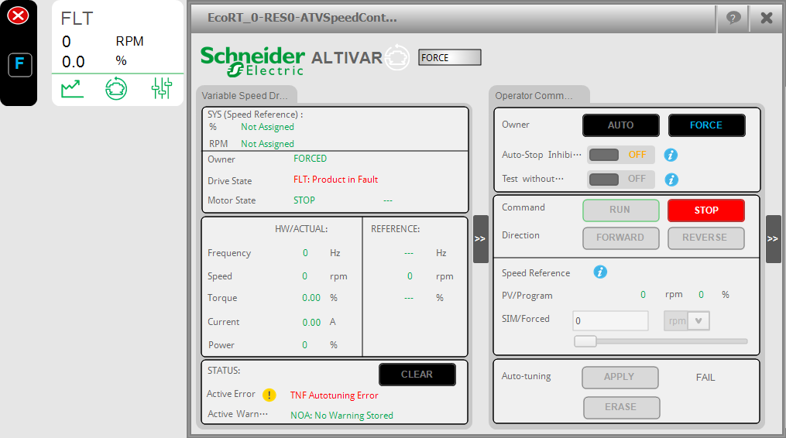
The error icon[ǃ] prompts up against the ‘Active Error’ field in the event of detected error. Click on the icon to navigate to the error specific web page for more details.
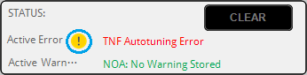
16. Save and restore the drive configuration
The project configuration can be saved for future use as a configuration file on your connected PC.
-
Open the ATV web server as shown in section 11.
-
Open the Setup tab → Select Menu > File Transfer > Configuration
-
There are two options that can be used to transfer the configuration
-
Copy from Device to PC: This option allows you to retrieve the configuration of the connected device to your computer.
-
Copy from PC to Device: This option allows you to download the configuration to the device.
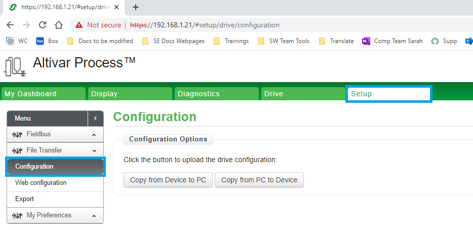
NOTE: SoMove can also be used to save the configuration. -
OPC UA Server
OPC UA Server is inbuilt in EcoStruxure Automation Expert, which enables the users to expose the required variables for external devices.
Enable OPC UA Server
OPC UA server is by default in disable state, to enable it follow the steps below:
-
Go to the Logical device properties (Right pane) → select Runtime Configuration > Communication > OPC UA Server > Enable server = True.
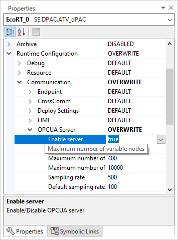
-
Go to the Logical device properties (Right pane) → select OPCUA Stack Configuration > Server configuration> click the ellipsis for the security > Select the security of the OPCUA Server.
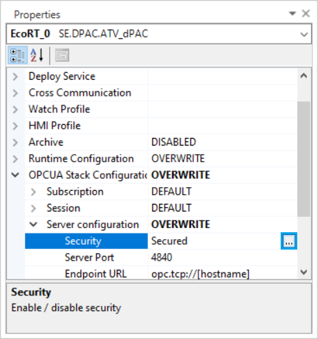
-
Deploy Device Configuration to enable OPC UA server.

-
In Function Blocks Network, add an ATVdPACxVW3A3530D.
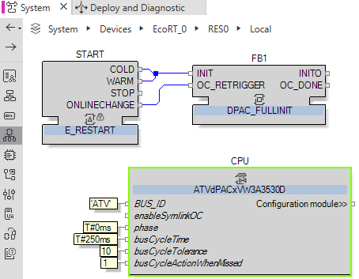
NOTE: the added ATVdPACxVW3A3530D has been used here just as an example. the parameters of any application can be shared via OPC UA. -
Click on the OPC UA Server icon → check the corresponding box for each solution component to expose the OPC UA variables.
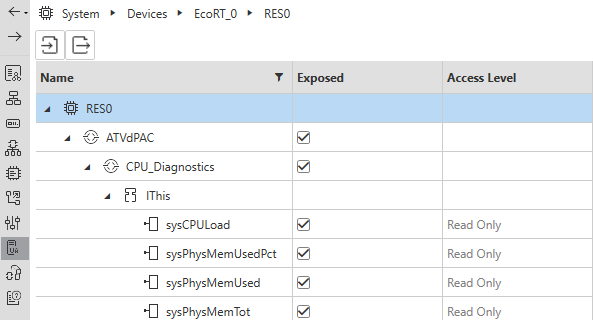
NOTE: The checked variables will be shared via OPC UA.NOTE: Open the Deploy and Diagnostic Editor and run the simulation, the OPC UA server will start automatically.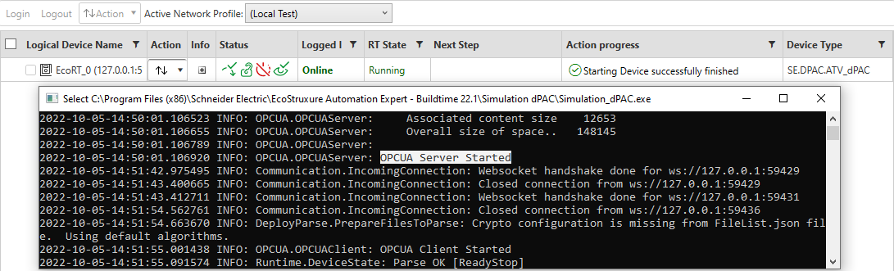
Test OPC UA Connection
Before you begin
-
Deploy the solution and connect ATV dPAC to OPC UA server using an OPC UA client software
-
To test the OPC UA, we will use a third party software to access to the OPC UA client (we chose uaExpert)
NOTE:Use the following link to download uaExpert: UaExpert – Downloads
Procedure
-
Open the uaExpert software → click on the (+) icon to add a server
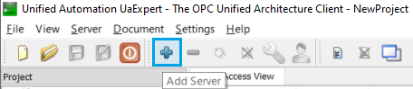
-
Double click to add a server in the custom discovery → set the URL that should be composed from opc.tcp://IP address of the ATV dPAC Module:Server port value → click the OK button.
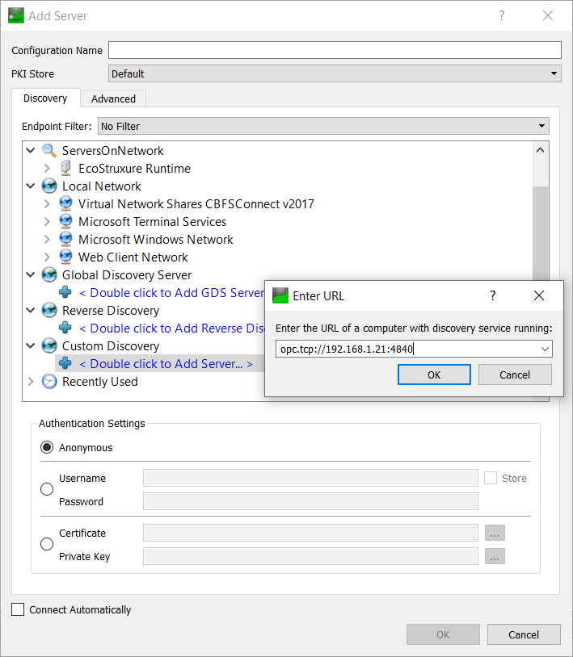
NOTE: the server port value can be accessed via EcoStruxure Automation Expert, In Logical devices tab → open the ATV dPAC Properties → overwrite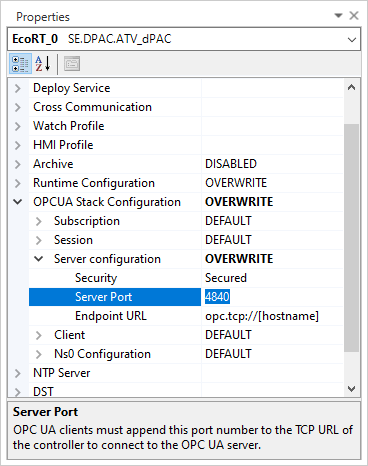
-
Select the added server → click the OK button.
NOTE: The connection is based on the selected security and encryption. -
The server will be added to the project window, right click on it → select connect.
NOTE: In the case of a secure connection, credentials will be required to connect. The credentials are the same as in EcoStruxure Automation Expert user management.Result: All the objects shared by EcoStruxure Automation Expert via OPC UA will be displayed in the Address Space window.
You can drag and drop an object to the Data Access View to analyze its variables.
Drive Deployment
-
Log Time-out to increase if there is any Time-out during Boot project Creation or Online Change
-
In EcoStruxure Automation Expert Software, click on the File tab.
-
Select Installed Plug-ins → EcoRT Plugin → Settings
-
Change the Connection Timeout, or Long Command Timeout, or upload timeout duration according to the requirements → click on save
-
-
Short Time to Update in case of any transition time out issues during Device Deploy Operation as below:
-
In EcoStruxure Automation Expert Software, click on the File tab → Select Installed Plug-ins → EcoRT Plugin → Settings
-
Change the Short command Timeout value → click on save
-
In Logical devices tab → open the ATV dPAC Properties → overwrite → set TimeoutShort = 30000
-
Open the Deploy and Diagnostic tab → Deploy Device Configuration to apply the changes.
-
In EcoStruxure Automation Expert Software, click on the File tab → Select Installed Plug-ins → EcoRT Plugin → Settings
Memory limitation due to archiving
Abstract
Hardware CATs can be configured to transmit information to an archiving server. This allows the recording of various data, such as the performance of motors and the history of warnings. However, it's important to note that excessive data accumulation can overload the memory, resulting in an ErrorHalt situation.
Description
If an ErrorHalt appears due to archiving, it is important to consider the hardware limitations of ATV dPAC on EcoStruxure Automation Expert. Here are the key points to keep in mind:
-
The default server configuration can only handle a maximum of 2000 variables per second for data collection.
-
If you are archiving variables periodically, you need to adjust the E_CYCLE frequency accordingly. For example, if you have 500 variables, the minimum value for E_CYCLE should be set to 500 ms.
-
It is recommended to avoid using a frequency below 50 ms for any archiving operation.
-
Archiving data with a frequency smaller than 1 second may lead to data saturation on the archiving server. Therefore, it is advisable to set a frequency of 1 second or more, depending on your specific application.
Follow these steps to set the frequency of the archiving data
|
Step |
Action |
|---|---|
|
1 |
Create new application CAT. |
|
2 |
Open the HMI of the application CAT created in step 1. |
|
3 |
Add a new input variable that will record the data. |
|
4 |
To access the attributes of the created variable, click on the ellipsis (...) located in the attribute column. This will open up window showing the attributes of the variable. |
|
5 |
To access the historization settings, click on the ellipsis (...) corresponding to Runtime.History.TrendingAndArchive in the value column. |
|
6 |
Configure the historization settings
|
|
7 |
The checkbox for the attribute Runtime.History.TrendingAndArchive will be selected, and its parameters will be automatically configured as displayed in the following figure. Click Ok. |